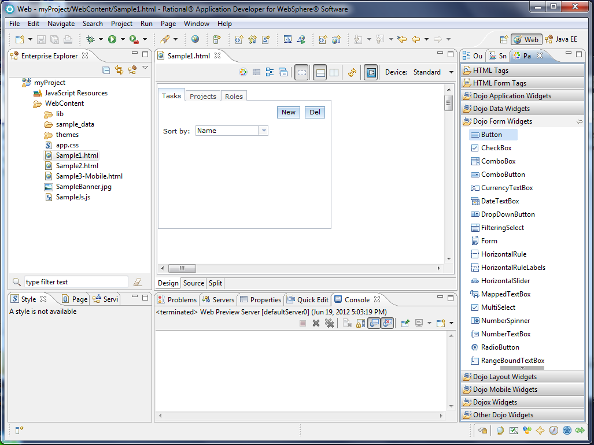

Eclipse Project Tests
Create and Download Eclipse Project
Steps
- Start maqetta in mutli user mode. (With M7, that's the only mode!)
- Create a new project by going to New-->Project in the menu bar.
- Type a name for the project, and click the "Enable Eclipse Support"
- Create a new folder under WebContent by going to the New-->Folder in the title bar. Call the folder aaa
- Create a new HTML file in the WebContent/aaa folder by going to New-->HTML File in the menu bar
- Add some content to the new HTML file, including at least one Dijit widget. Save and close
- Re-open file. Hit preview. URL should end in zazl=true. If not, enable zazl in preferences and hit preview again. Confirm that widget renders.
- Download the entire workspace as a zip by clicking the "Download Workspace" icon on the File Explore shortcut bar.
- Default settings are fine, click OK and save the file somewhere on the file system
- Unpack zip file and open HTML file you created in a browser. Make sure Dijit widget renders
Expected results
You should have a zip file in your file system containing a zip file with the same files and structure as your Maqetta workspace.
Import Project into Eclipse
NOTE: If you choose to do the optional Rational Application Developer 8.5 tests in the last section, you can skip this part (since RAD runs on top of Eclipse).
Steps
- Start Eclipse.
- Select the File-->Import menu option.
- In the General section select Existing Project into Workspace, click the radio button next to From Archive, and then browse to find the zip file you just downloaded.
- The Maqetta project should show up in the list of available projects. Select it and click OK
Expected results
You should now have a project in your Eclipse workspace with the same name and structure as your Maqetta project. You should be able to open
any of the HTML files in a browser or editor.
Import Project into Rational Application Developer 8.5 (optional)
NOTE: While marked "optional" if you have RAD 8.5 installed, it is strongly recommended you run through this scenario.
Steps
- If you don't have Rational Application Developer 8.5 on your system, then download and install
the evaluation copy.
- Start Rational Application Developer 8.5.
- Select the File-->Import menu option.
- In the General section select Existing Project into Workspace, click the radio button next to From Archive, and then browse to find the zip file you just downloaded.
- The Maqetta project should show up in the list of available projects. Select it and click OK
- Once the import is complete, switch to the Web Perspective.
- Open the file you created earlier (or Sample1.html) and you should see the file in RAD's Rich Page Editor with a rendering that looks like it did in Maqetta.
- Make the Palette tab visible and you should see widgets that can be dragged onto your page.
- Drag a Dojo widget from the palette onto your page and ensure it gets added where you dropped it with an appropriate rendering.
Expected results
You should now have a project in your RAD workspace with the same name and structure as your Maqetta project. You should be able to open
your file in RAD's Rich Page Editor and drag/drop widgets from RAD's widget palette.
